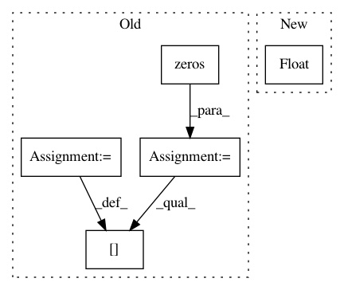

d7df3585734f7d0326d5f854d8f16fe3b3d06373,mir_eval/boundary.py,,detection,#Any#Any#Any#Any#Any#,49
Before Change
n_ref, n_est = len(reference_boundaries), len(estimated_boundaries)
window_match = np.abs(np.subtract.outer(reference_boundaries, estimated_boundaries)) <= window
window_match = window_match.astype(int)
// L. Lovasz On determinants, matchings and random algorithms.
// In L. Budach, editor, Fundamentals of Computation Theory, pages 565-574. Akademie-Verlag, 1979.
//
// If we build the skew-symmetric adjacency matrix
// D[i, n_ref+j] = 1 <=> ref[i] within window of est[j]
// D[n_ref + j, i] = -1 <=> same
//
// then rank(D) = 2 * maximum matching
//
// This way, we find the optimal assignment of reference and annotation boundaries.
//
skew_adjacency = np.zeros((n_ref + n_est, n_ref + n_est), dtype=np.int32)
skew_adjacency[:n_ref, n_ref:] = window_match
skew_adjacency[n_ref:, :n_ref] = -window_match.T
matching_size = np.linalg.matrix_rank(skew_adjacency) / 2.0
After Change
estimated_boundaries,
window)
precision = float(len(matching)) / len(estimated_boundaries)
recall = float(len(matching)) / len(reference_boundaries)
f_measure = util.f_measure(precision, recall, beta=beta)
In pattern: SUPERPATTERN
Frequency: 3
Non-data size: 5
Instances
Project Name: craffel/mir_eval
Commit Name: d7df3585734f7d0326d5f854d8f16fe3b3d06373
Time: 2014-04-18
Author: brm2132@columbia.edu
File Name: mir_eval/boundary.py
Class Name:
Method Name: detection
Project Name: geomstats/geomstats
Commit Name: 4eba7470a74a226f38c7fbed2757e44ef65ae686
Time: 2020-04-03
Author: nicolas.guigui@inria.fr
File Name: geomstats/geometry/lie_algebra.py
Class Name: MatrixLieAlgebra
Method Name: baker_campbell_hausdorff
Project Name: facebookresearch/Horizon
Commit Name: 9cf8f6cdf6a2008843cb37da6e34b8d10353b0bf
Time: 2019-12-12
Author: kittipat@fb.com
File Name: ml/rl/preprocessing/sparse_to_dense.py
Class Name: PythonSparseToDenseProcessor
Method Name: process